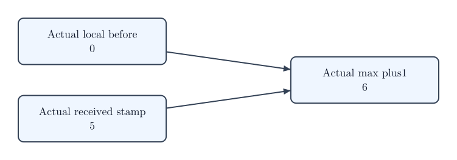
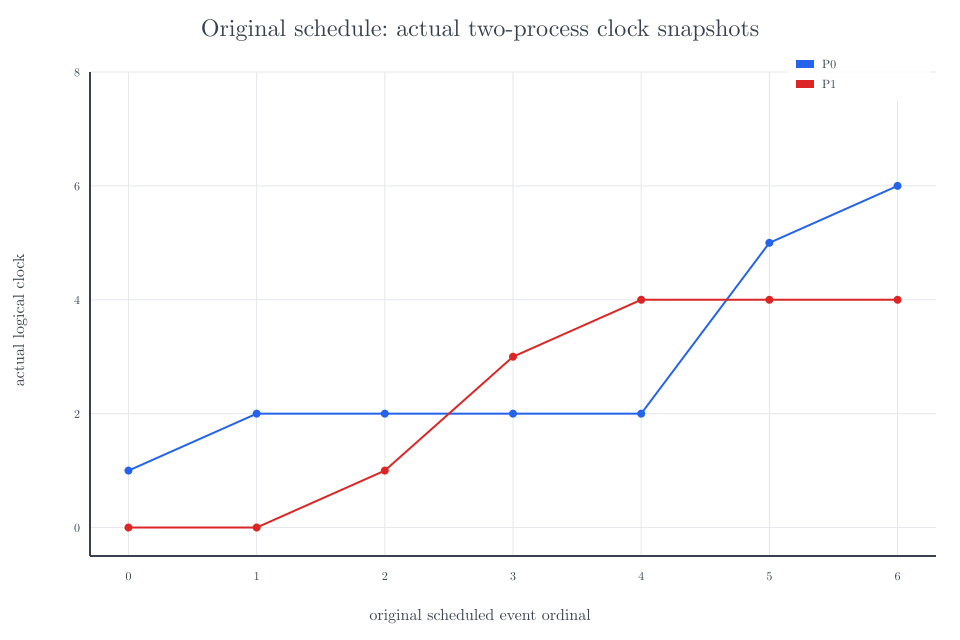
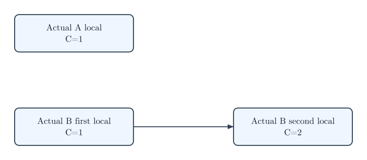
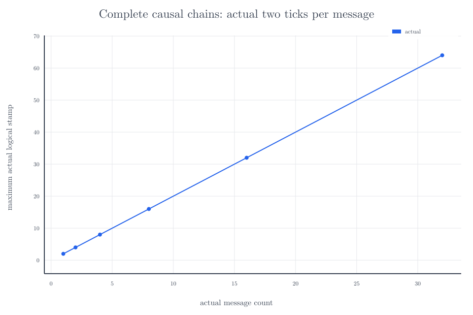

Lamport clocks through actual message events
Abstract
Distributed processes need to respect causal event order without relying on a shared physical clock. Lamport clocks assign scalar logical timestamps by incrementing locally and advancing past received stamps. We inspect actual pre/post transitions, retain the original seven-event exchange, and show why increasing scalar time does not prove causality. Finite signed64 limits are checked before mutation rather than permitting undefined overflow.
The clock condition and its one-way implication
Let happened-before be generated by program order within each process, a send before its matching receive, and transitivity. Each local/send event increments its clock. A receive stamped M commits
An event’s local successor has a larger timestamp, and a receive has a larger timestamp than its actual send stamp. Induction along a happened-before path gives a→b implies C(a)<C(b). The converse is false: independent processes can accumulate different local counts without communicating. Equal timestamps also occur. A consistent process-id tie-break can extend this partial order to a total order, but the scalar clock alone does not identify causality or physical elapsed time.
The native class owns one process’s counter only. Callers must attach actual send stamps and record every relevant local event; the API does not authenticate messages, infer network edges, synchronize threads or detect omitted events. Actual transition records retain before, original receive stamp and committed after, using the same kernel as historical scalar methods.
One receive with explicit inputs
A new process receiving the synthetic nonnegative stamp5 advances from0 to6. This is a checked numerical control, not a claim that a particular network send occurred.
#include <dm/dm.hpp>
int main() {
std::filesystem::create_directories("build");
dm::algorithms::LamportClock c;
const auto e = c.receive_step(5);
std::print("| actual local before | actual received stamp | actual committed after |\n| ---: | ---: | " "---: |\n| {} | {} | {} |\n",
e.before, e.message_time, e.after);
dm::graphics::Diagram d;
d.node("local", {0, 1}, std::format("Actual local before\n{}", e.before)).node("message", {0, -1}, std::format("Actual received stamp\n{}", e.message_time)).node("after", {7, 0}, std::format("Actual max plus1\n{}", e.after)).edge("local", "after").edge("message", "after").save_svg("build/lamport_receive.svg");
}| actual local before | actual received stamp | actual committed after |
|---|---|---|
| 0 | 5 | 6 |

Original two-process exchange
Keep the original seven events: P0 local, P0 send m1, P1 local, P1 receive m1, P1 send m2, P0 receive m2, P0 local. Message stamps are taken directly from actual send records. The plot shows both clock snapshots after each scheduled event; a carried unchanged value for the other process is context, not an event on that process. The horizontal axis is illustrative schedule ordinal, not physical seconds.
#include <dm/dm.hpp>
int main() {
std::filesystem::create_directories("build");
dm::algorithms::LamportClock p0, p1;
std::vector<double> x, a, b;
std::print("| original schedule ordinal | original event | actual before | incoming stamp or0 | actual " "after | P0 snapshot | P1 snapshot |\n| ---: | --- | ---: | ---: | ---: | ---: | ---: |\n");
auto show = [&](const char *name, const dm::algorithms::LamportEvent & e) {
std::print("| {} | {} | {} | {} | {} | {} | {} |\n", x.size(), name,
e.before, e.message_time, e.after, p0.time(), p1.time());
x.push_back(x.size());
a.push_back(p0.time());
b.push_back(p1.time());
};
show("P0 local", p0.local_step());
const auto m1 = p0.send_step();
show("P0 send m1", m1);
show("P1 local", p1.local_step());
const auto r1 = p1.receive_step(m1.after);
show("P1 receive m1", r1);
const auto m2 = p1.send_step();
show("P1 send m2", m2);
show("P0 receive m2", p0.receive_step(m2.after));
show("P0 local", p0.local_step());
std::print("\nActual m1 send {}; actual m1 receive {}; strict send-before-receive {}.\n",
m1.after, r1.after, m1.after < r1.after);
auto p = dm::graphics::RPlot::create();
p.line(x, a, "P0", {37, 99, 235}, 2).points(x, a, "", {37, 99, 235}, 4).line(x, b, "P1", {220, 38, 38}, 2).points(x, b, "", {220, 38, 38}, 4).y_limits(-.5, 8).title("Original schedule: actual two-process clock snapshots").x_label("original scheduled event ordinal").y_label("actual logical clock").save_svg("build/lamport_original.svg");
}| original schedule ordinal | original event | actual before | incoming stamp or0 | actual after | P0 snapshot | P1 snapshot |
|---|---|---|---|---|---|---|
| 0 | P0 local | 0 | 0 | 1 | 1 | 0 |
| 1 | P0 send m1 | 1 | 0 | 2 | 2 | 0 |
| 2 | P1 local | 0 | 0 | 1 | 2 | 1 |
| 3 | P1 receive m1 | 1 | 2 | 3 | 2 | 3 |
| 4 | P1 send m2 | 3 | 0 | 4 | 2 | 4 |
| 5 | P0 receive m2 | 2 | 4 | 5 | 5 | 4 |
| 6 | P0 local | 5 | 0 | 6 | 6 | 4 |
Actual m1 send 2; actual m1 receive 3; strict send-before-receive true.

Scalar order does not imply causality
Now perform one local event on A and two on B, with no messages. A’s event has time1 and B’s second has time2, but there is no happened-before path between them. The diagram includes only the actual within-B program-order edge; no cross-process arrow is invented from timestamp order.
#include <dm/dm.hpp>
int main() {
std::filesystem::create_directories("build");
dm::algorithms::LamportClock a, b;
const auto a1 = a.local_step(), b1 = b.local_step(), b2 = b.local_step();
std::print("| actual process/event | actual timestamp |\n| --- | ---: |\n| A first local | {} |\n| B " "first local | {} |\n| B second local | {} |\n",
a1.after, b1.after, b2.after);
std::print("\nA first time less than B second time {}; messages in this complete control 0.\n",
a1.after < b2.after);
dm::graphics::Diagram d;
d.node("a", {0, 3}, std::format("Actual A local\nC={}", a1.after)).node(
"b1", {0, 0}, std::format("Actual B first local\nC={}", b1.after)).node(
"b2", {7, 0}, std::format("Actual B second local\nC={}", b2.after)).edge("b1", "b2").save_svg("build/lamport_concurrent.svg");
}| actual process/event | actual timestamp |
|---|---|
| A first local | 1 |
| B first local | 1 |
| B second local | 2 |
A first time less than B second time true; messages in this complete control 0.

Complete chains and the finite clock boundary
Alternate sends between two processes, using every actual receive as the predecessor of the next send. A chain of n messages contains2n causally ordered send/receive events, so from zero clocks its largest stamp is2n. This checks a complete family of native message chains, not a physical-delay or network-throughput benchmark.
A receive with an old stamp still advances past the current clock. Incoming negatives are invalid. If max(current,incoming) is INT64_MAX, the next increment cannot be represented: validation throws before mutation. Receiving INT64_MAX−1 is permitted and reaches the last representable value; a subsequent send fails atomically.
#include <dm/dm.hpp>
int main() {
std::filesystem::create_directories("build");
std::vector<double> x, y;
std::print("| actual messages | actual send and receive events | final maximum logical stamp | exact " "complete-chain value |\n| ---: | ---: | ---: | ---: |\n");
for (int n : {1, 2, 4, 8, 16, 32}) {
std::array<dm::algorithms::LamportClock, 2> c;
for (int i = 0; i < n; ++i) {
const auto s = c[i % 2].send_step();
c[1 - i % 2].receive_step(s.after);
}
const auto final = std::max(c[0].time(), c[1].time());
std::print("| {} | {} | {} | {} |\n", n, 2 * n, final, 2 * n);
x.push_back(n);
y.push_back(final);
}
dm::algorithms::LamportClock old;
old.receive(100);
const auto stale = old.receive_step(2);
dm::algorithms::LamportClock edge;
edge.receive(std::numeric_limits<std::int64_t>::max() - 1);
const auto before = edge.time();
bool overflow = false;
try {
edge.send_step();
} catch (const std::overflow_error &) {
overflow = true;
}
std::print("\n| old-stamp receive before | actual incoming old stamp | actual after | maximum send " "rejected | boundary state unchanged |\n| ---: | ---: | ---: | --- | --- |\n| {} | {} | {} | " "{} | {} |\n",
stale.before, stale.message_time, stale.after, overflow,
edge.time() == before);
auto p = dm::graphics::RPlot::create();
p.line(x, y, "actual", {37, 99, 235}, 2).points(x, y, "", {37, 99, 235}, 4).title("Complete causal chains: actual two ticks per message").x_label("actual message count").y_label("maximum actual logical stamp").save_svg("build/lamport_chains.svg");
}| actual messages | actual send and receive events | final maximum logical stamp | exact complete-chain value |
|---|---|---|---|
| 1 | 2 | 2 | 2 |
| 2 | 4 | 4 | 4 |
| 4 | 8 | 8 | 8 |
| 8 | 16 | 16 | 16 |
| 16 | 32 | 32 | 32 |
| 32 | 64 | 64 | 64 |
| old-stamp receive before | actual incoming old stamp | actual after | maximum send rejected | boundary state unchanged |
|---|---|---|---|---|
| 101 | 2 | 102 | true | true |

Scope and verification
The scalar state is nonnegative signed64, with O(1) allocation-free transitions and owned returned records. Copying a clock copies only its value. Independent objects share no mutable state, while concurrent mutation of one clock needs caller synchronization. Negative/overflow failures occur before commit. This library models only clock updates, leaving process identities, messages, causal graph construction and protocol correctness to the caller. No timestamp-to-duration inference is made.
An independent integer max recurrence checked10000 actual local/send/receive
transitions, and another10000 transitions matched the frozen valid-input clock
exactly. Native tests retain the original seven-event exchange, check transitive
happened-before on explicit message/program-order graphs and verify
complete-chain identities, full-width atomic failures, copied state and existing
formatting. The ten-report shared build passed141 native CTest cases,45 directly
instrumented address/undefined-behaviour sanitizer cases,90 compiled/executed
public examples,412/412 scoped file definitions plus11/11 changed
lagged-Fibonacci engine definitions, and ten representative clangd hovers. All
four complete report programs executed and all four native figures were visually
reviewed. Receipts and repeatable checks are retained under
build/mepml-conversion/batch-184-193/.
References
L. Lamport(1978), Time, Clocks, and the Ordering of Events in a Distributed System, Communications of the ACM21(7),558–565. The finite signed64 failure policy and actual record API are native implementation contracts.